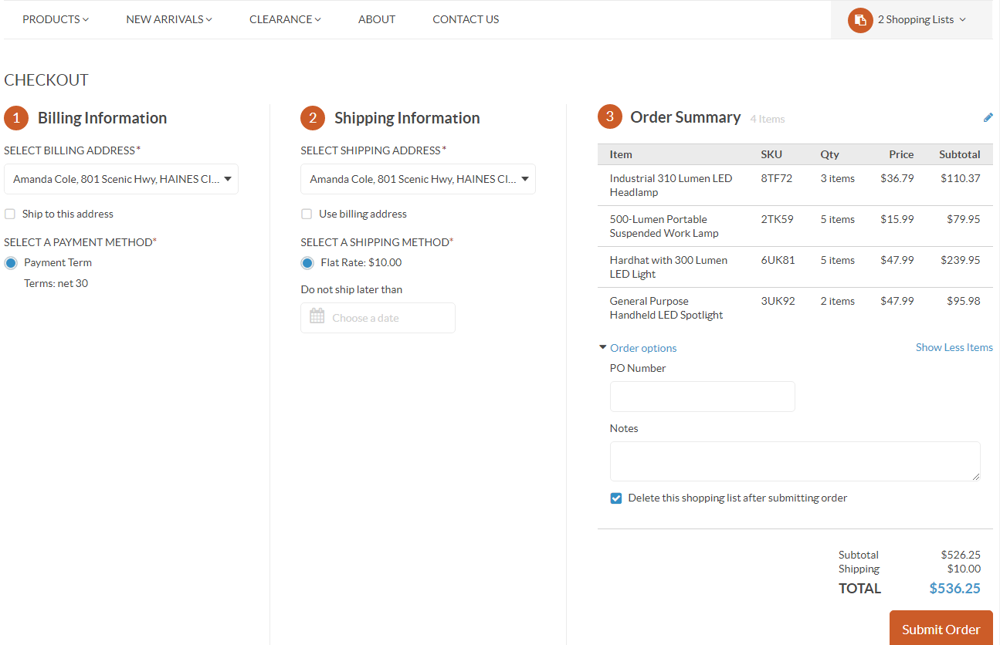
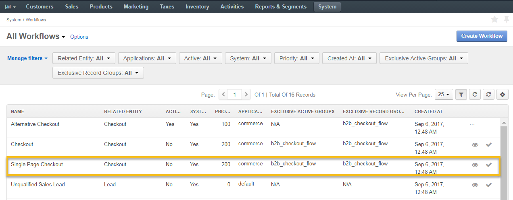
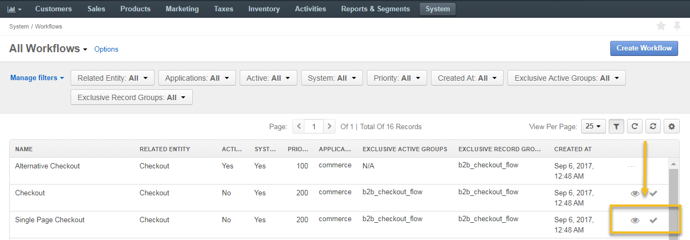
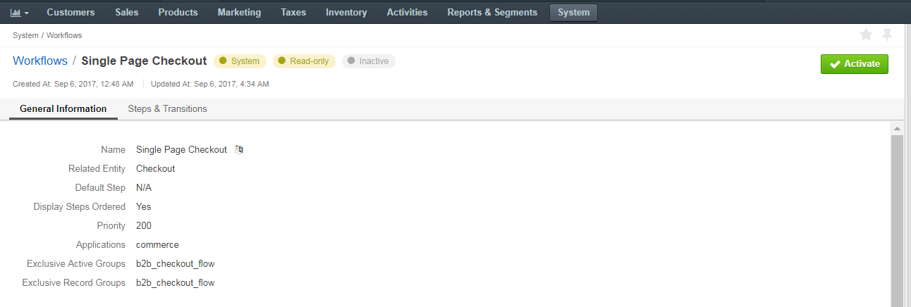
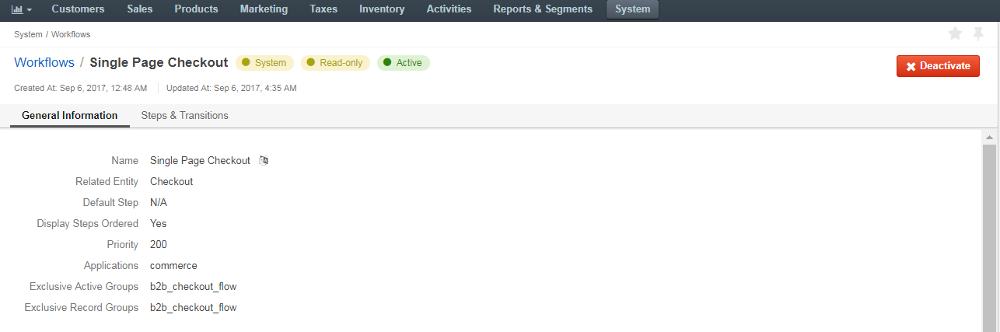
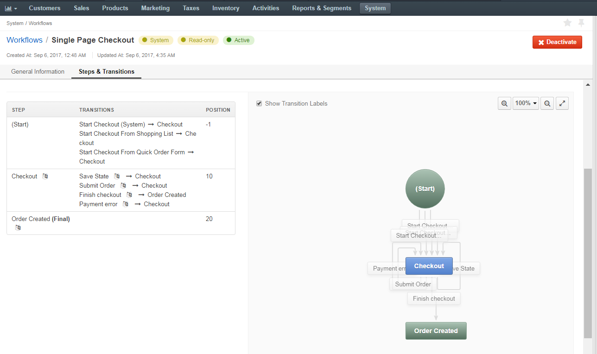
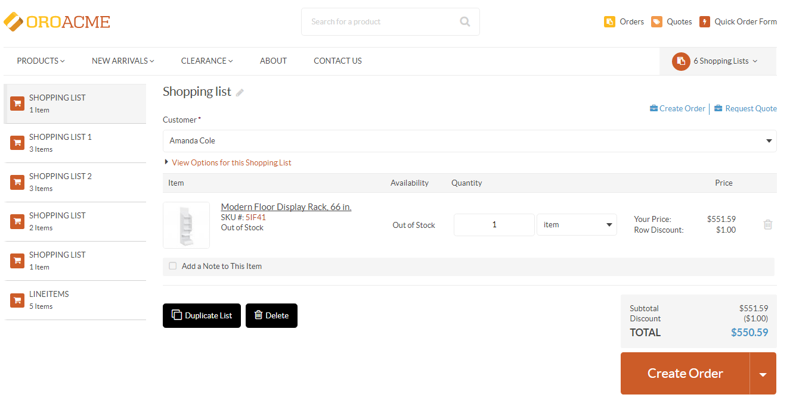
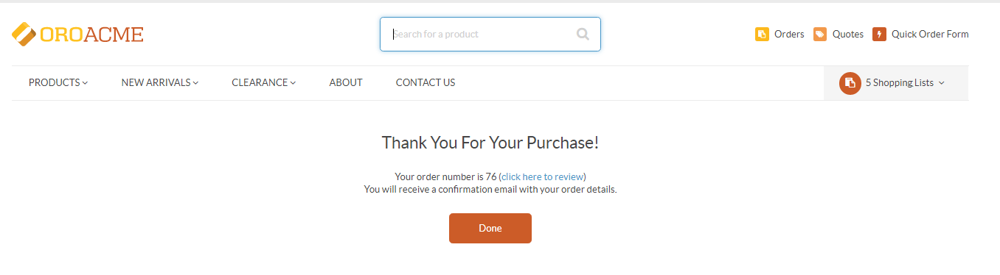

In your Oro application, you can control the way the checkout is displayed to customers in the storefront. By default, each checkout step is displayed on a new page. However, by activating the Single Page Checkout workflow in the management console, you can make all steps fit one page. This will make the checkout process easier and quicker for customers, since they will be able to see how far along in the checkout they are, and how many fields are left to complete it.
To reach the Single Page Checkout workflow:
Navigate to System > Workflows in the main menu.
Click Single Page Checkout to open the flow.
Within the list of workflows, you can perform the following actions for the Single Page Checkout workflow:
View the workflow:
Activate the workflow:

Note
If the workflow is active, you will be able to deactivate it from the list page by clicking .
On the the Single Page Checkout workflow page, you can perform the following actions:
Activate — Click Activate on the top right of the page to activate the workflow.
Deactivate (if the workflow is active) – click Deactivate on the top right of the page to deactivate the workflow.
For more information on how to manage workflows, see the Workflow Management topic.
The Single Page Checkout workflow consists of the following steps and transitions:
As an illustration let us go through the sample flow to see the Single Page Checkout workflow in action:
A customer adds an item to the shopping list in the storefront, and clicks Create Order to proceed to the checkout.
The following sections (steps) are displayed on one page:
In the Billing Information section, the customer provides his address and selects a payment method.
In the Shopping Information section, the customer:
In the Order Summary section, the customer:
The customer submits the order by clicking Submit Order on the top left of the page.
The customer receives an email confirmation with order details.
